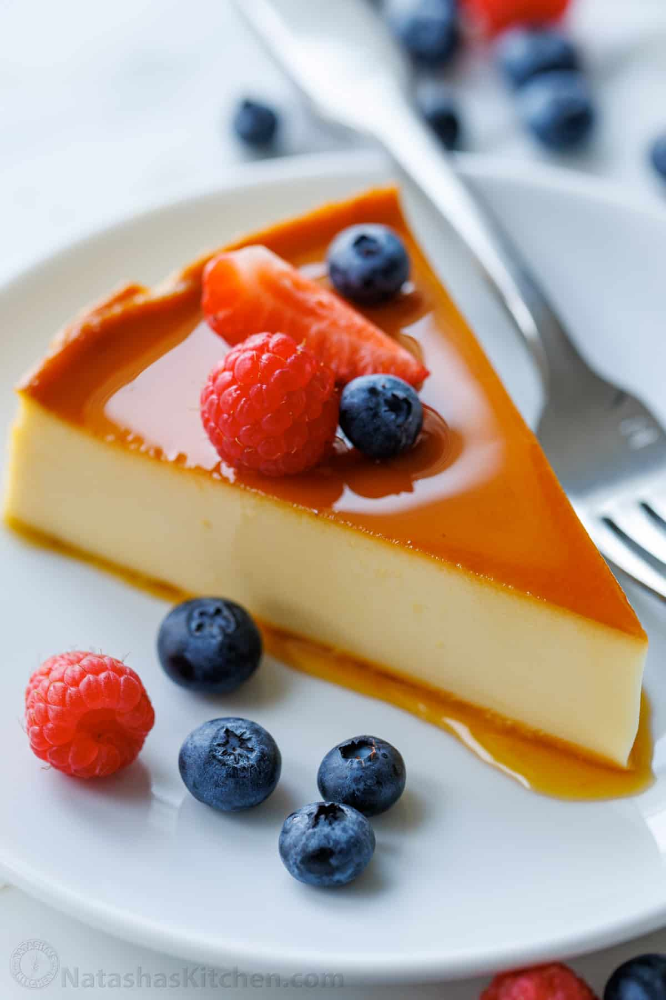
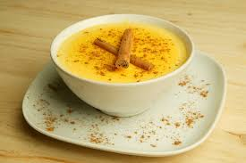
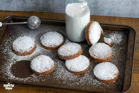

Flan
- Flan is a smooth, creamy caramel custard dessert that is popular
throughout Spain.Flan is often served chilled and is a common
dessert in Spanish homes and restaurants.
El flan es un postre suave y cremoso de natillas de caramelo muy
popular en toda España. El flan se suele servir frío y es un postre
común en los hogares y restaurantes españoles.
 Tarta de Santiago
Tarta de Santiago
Tarta de Santiago is a traditional almond cake from the region of
Galicia in northwestern Spain. The cake is made primarily from
ground almonds, sugar, eggs, and a hint of lemon zest.
La Tarta de Santiago es un pastel de almendras tradicional de la
región de Galicia, en el noroeste de España. El pastel se elabora
principalmente con almendras molidas, azúcar, huevos y un
toque de ralladura de limón
 Tocinillo de Cielo
Tocinillo de Cielo
Tocinillo de cielo, is a Spanish dessert made from egg yolks,
sugar, and water.The dessert is cooked in a syrup made from
sugar, creating a glossy, caramelized exterior.
Tocinillo de cielo, es un postre español elaborado con yemas de
huevo, azúcar y agua. El postre se cocina en un almíbar
elaborado con azúcar, creando un exterior brillante y
caramelizado.
Natillas
Natillas is a creamy custard dessert similar to vanilla pudding,
commonly eaten in Spain.It is made with milk, sugar, egg yolks,
and cornstarch to thicken the custard.
Las natillas son un postre cremoso de natillas similar al pudín de
vainilla, que se come comúnmente en España. Se elabora con
leche, azúcar, yemas de huevo y maicena para espesar las
natillas
Polvorones
Polvorones are traditional Spanish shortbread cookies that are especially
popular during Christmas.The name "polvorones" comes from the Spanish
word "polvo," meaning "dust," which reflects their delicate and powdery
nature.
Los polvorones son galletas de mantequilla tradicionales españolas que son
especialmente populares durante la Navidad. El nombre "polvorones" proviene de la
palabra española "polvo", que refleja su naturaleza delicada y polvorienta.